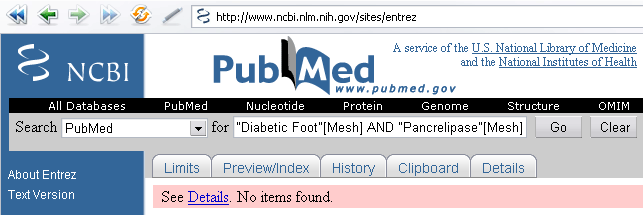

Модным направлением в современной медицине является использование препаратов, оказывающих многоплановое влияние на различные патологические процессы и на организм человек в целом и, как результат, имеющих очень разнообразный спектр показаний к использованию. Одним из таких «современных» направлений является системная энзимотерапия. Ранее мы уже обращали внимание посетителей нашего сайта на чудо-препарат вобензим («Все богатые делают это!»). В данной статье — описание новой методики терапии флогэнзимом синдрома диабетической стопы у пациентов с сахарным диабетом.
Инфекция стопы у пациентов с сахарным диабетом является огромной медицинской, социальной и экономической проблемой во всём мире. Осложнения, связанные со стопой — самая частая проблема для пациентов с диабетом. Риск развития осложнённых форм синдрома диабетической стопы в течение всей жизни составляет от 12 до 25%. Кроме того, очень высока вероятность рецидивирования. В настоящее время многие исследователи озадачены проблемой оптимизации лечения данной популяции пациентов.
Особый интерес вызывают препараты, оказывающие многоплановое влияние на гнойно-воспалительный процесс. В одной из клиник столицы было проведено исследование, целью которого являлось оценить эффект назначения энзимов для пациентов с инфекцией диабетической стопы. Исследование описано в главе «Полиферментные препараты в гнойной хирургии» (В.М. Кошкин, С.В. Минаев, Ю.А. Спесивцев, Г.Ю. Кнорринг. Полиферментные препараты в хирургической практике. СПб.: «Человек», 2004. — 112 с.). К сожалению, в описании нет подробной информации о дизайне исследования, материалах и методах, наличии контрольной группы, рандомизации, основных оцениваемых конечных параметрах, наличии/отсутствии наблюдения за пациентами в периоде последующего наблюдения.
Пролечено 475 больных с 3-5 стадией синдрома диабетической стопы по Wagner.
| Стадия 0 | Предъязвенное поражение, наличие костной деформации |
| Стадия 1 | Поверхностная кожная язва |
| Стадия 2 | Язва распространяется на глубже лежащие ткани. Возможно в ране обнаруживаются сухожилия, кости, суставы. |
| Стадия 3 | Абсцессы глубоких тканей, остеомиелит |
| Стадия 4 | Гангрена дистальной части стопы |
| Стадия 5 | Распространённая гангрена стопы |
Следует отметить, что в проведённом исследовании принимали участие заведомо хирургические пациенты, требующие оперативного стационарного лечения и комплексного фармакологического обеспечения.
В результате кратковременной терапии энзимами (5-7 суток до операции) устранился болевой синдром, купировался отёк нижних конечностей, восстановилась температурная, болевая и тактильная чувствительность и исчезли признаки воспаления. У 318 больных всё же не удалось избежать ампутаций нижних конечностей, но течение послеоперационного периода было гладким. После операции приём энзимов продолжался в максимальных дозировках до полного стихания воспалительных явлений. После выписки в удовлетворительном состоянии пациенты продолжали получать препарат до 8 недель; правда, цель этого назначения из описания материалов и методов исследования остаётся неясной. Результаты позволили авторам работы рекомендовать системную энзимотерапию как обязательный компонент лечения осложнённых форм синдрома диабетической стопы.
Собственно, в чём состояла системная энзимотерапия? Всё очень просто — так называется теперь — назначение препарата Флогэнзим. Состав его: панкреатин 100 мг, папаин 60 мг, бромелаин 45 мг, трипсин 24 мг, химотрипсин 1 мг, амилаза 10 мг, липаза 10 мг, рутин 50 мг в одном драже. Для сравнения, приведём Мезим-форте (тоже ферментный препарат): липазы ЕД ЕФ 3500, амилазы ЕД ЕФ 4200, протеаз (в том числе аналогичных Флогэнзиму) ЕД ЕФ 250. Ещё один препарат — Мезим-форте 10000 — липазы ЕД ЕФ 10000, амилазы ЕД ЕФ 7500, протеаз ЕД ЕФ 375.
Флогэнзим содержит микродозы некоторых ферментов и растительный компонент бромелаин (содержится, например, в ананасе). Стоимость лечения по схеме для диабетической стопы (1 неделя + стационарное лечение + 8 недель) превышает 1000$. Почему бы не использовать другой препарат? Например, Мезим (Панкреатин). Известный бренд, понятное действие, дозировка в сотни раз превышающая Флогэнзим, можно сочетать с умеренной ананасовой диетой, что не противоречит сахарному диабету.
Хочется надеяться, что исследователям всё же удастся снизить процент ампутаций, так как в приведённой работе, несмотря на все добавки, он оставался предельно высоким. Следует учесть и фармакоэкономические аспекты. Стоимость лечения с чудо-энзимом не по карману диабетикам, которые к моменту развития синдрома диабетической стопы обычно уже являются инвалидами, неработоспособными гражданами. Препарат же типа панкреатина смог бы не так сильно опустошить карман. Учитывая потрясающие данные успешного опыта системной энзимотерапии, возможно, назрела необходимость провести сравнительное исследование препаратов Мезим, Панкреатин, Флогэнзим, Вобэнзим в терапии инфекции диабетической стопы. Более того, зная, из чего состоит препарат «Импаза», хочется и его добавить в перечень препаратов для исследования. Контрольная же группа должна быть разделена на пациентов изолированных от ананасов и пациентов с доступом к ананасам (бромелаин). Только после такого всестороннего подхода к проблеме мы сможем реально понять ту огромную роль, которую играет системная энзимотерапия в нашей клинической практике.
Нами была предпринята попытка найти аналогичные исследования в Национальной медицинской библиотеке США Medline, которая содержит порядка 16 млн. статей, опубликованных с 60-х гг. прошлого века более чем в 4000 медицинских и биологических журналах. Учитывая, что основную долю препарата составляют панкреатические ферменты, поиск проводился по базе данных MeSH по ключевым словам «Диабетическая стопа» и «Панкреолипаза», т.е. акцент делался на идентификацию исследований, посвящённых применение панкреатических ферментов в лечении синдрома диабетической стопы. По данному запросу не было найдено ни одной публикации.

Тем не менее, мы не теряем оптимизма — для дальнейшего погружения в проблему рекомендуем вам ряд русскоязычных научных изданий:
- Системная энзимотерапия в профилактике осложнений послеоперационного периода: пособие для врачей / под ред. В.С. Савельева. — М., 2002. — 16 с.
- Суздальницкий Р.С. Системная энзимотерапия в спорте / Р.С. Суздальницкий, В.А. Левандо, В.Н. Оксень, З.Г. Орджоникидзе, Ю.И. Стернин. — М., 1999. 32 с.
- Рансбергер К. Энзимы и энзимотерапия: пер с нем. / К. Рансбергер, С. Ной. — Мюнхен, 1999. — 243 с.
- Системная энзимотерапия. Практическое руководство для врачей / под ред. В.А. Насоновой, В.И. Мазурова. — СПб.: «Интермедика», 2003. — 32 с.
- Иорданская Ф.А. Мониторинг здоровья и функциональная подготовленность высококвалифицированных спортсменов в процессе учебно-тренировочной работы и соревновательной деятельности / Ф.А. Иорданская, М.С. Юдинцева. М.: «Советский спорт», 2006. — 183 с.
В.В. Привольнев